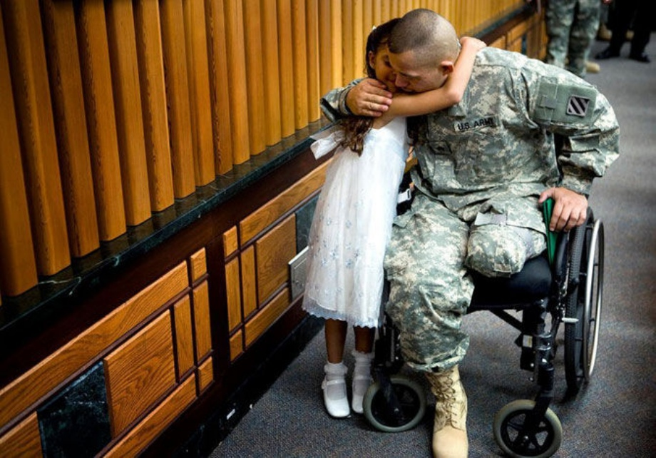
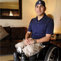
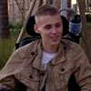
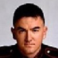

Our mission is to help raise money for the wounded warriors that have been injured in combat all over the world. Fighting for us and our country.

Meet the Wounded

PFC John Smith
US Army
When John Smith joined the military back in 1984, he never realized how much he would love serving his country, like most before him did. He was barely out of his AIT when he heard that President Bush Sr., had decided to invade Iraq and get Hussien out of power. This news had left him mixed feelings, one was excitement, while the other was being scared of dying in combat. He wasn't ready to die, buthe knew what he had signed up for and quickly overcame the emotions. John and his company was moving south into Bagdad when ememy fire abruptly suddenly from every direction. His team moved quickly to the nearby buildings when he heard a blast close to him, what sounded like an rpg, exploded near the bottom of the building. All he felt was being confused, he passed out seconds later. When he woke up he was in the MASH unit, he remembered saying hysterically that he couldn't feel his legs. The doctor told him that both his legs were blown off and that he would never walk again. Please Donate to this charity and to help to with our wounded warriors to have a peace of mind.

Corp Terry Long
Us Army
Terry Long joined the Army to serve his country when he was 18, just out of high school. His family backed his decision, but his decision was not really approved by mom. When he graduated boot and A.I.T., a friend was volunteering for Ranger School in Fort Benning, Georgia. He went to his CO and requested a transfer to Benning and go through the training. Upon graduation, 911 happened and his team was sent to Afghanistan after the graduation ceremony. The squad got orders to move on a group of surgents believed to be in the mountains south of Charikar, north of Kabul. Upon arriving the unit encountered heavy resistances for the terrorist and suffered heavy causalities. The Corporal was barely arrived when the rescue team arrived, a shot encountered his spine and servered it in two. He is bound to a wheelchair for the rest of his life. He soon found out later that the US government had denied the incident and that it never happened. He struggles everyday to get the help he needs for his bills and medical expenses, the check he recieves from the military isn't enough for him to function. Please Donate to help him through his troubled times.

Sgt Mike Bullock
Us Marine
Mike had been a Marine going on 10 years and he loved the life. Thinking that he would make a career out of it and retire from the Corp he loved. Two years after that thought, his company was sent to Afghanistan for a one year tour. Shortly after arriving the company was ordered to move against surgents south of Kabul. What the intel didn't show was that the surgents had planted land mines all around the camp, which was unusual for them. Moving in undetected so far, he had a bad feeling that this was his last day he would see this world. Moving south to the camp, they eased onwards, when suddenly it starting raining mortar fire from the surgent's basecamp. The sky opened with a world of terror and continued for about 15 minutes non-stop. When it was over, Mike Bullock had lost both his legs. Like the other two stories the medical check he recieves from his service isn't enough to make the bills that he needs to make it. His wife helps by working two jobs to make ends meet. Please Donate to this charity, so that our heros won't suffer.